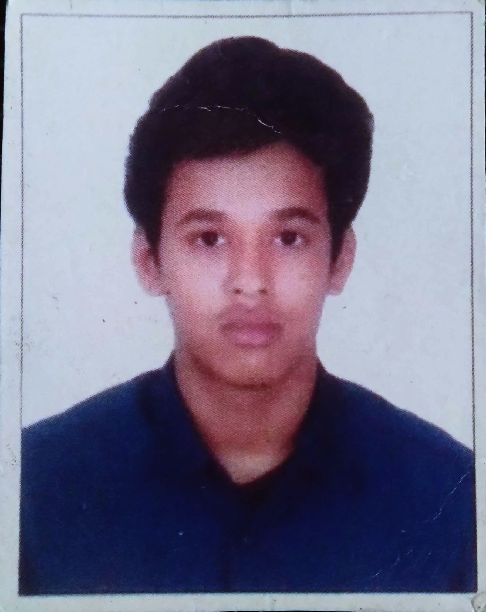

|  |
|
| Duration | Qualification | Institute | Grades |
|---|---|---|---|
| 2019-2023 | B-tech | VNR VJIET | 7.6 CGPA |
| 2017-2019 | Intermediate | Sri Chaitanya Junior kalasala | 89.7% |
| Programming languages | C, Python, Html, Verilog, Matlab. |
| Softwares | Matlab, Multisim, Intellij, Code composer studio, Xilinx. |